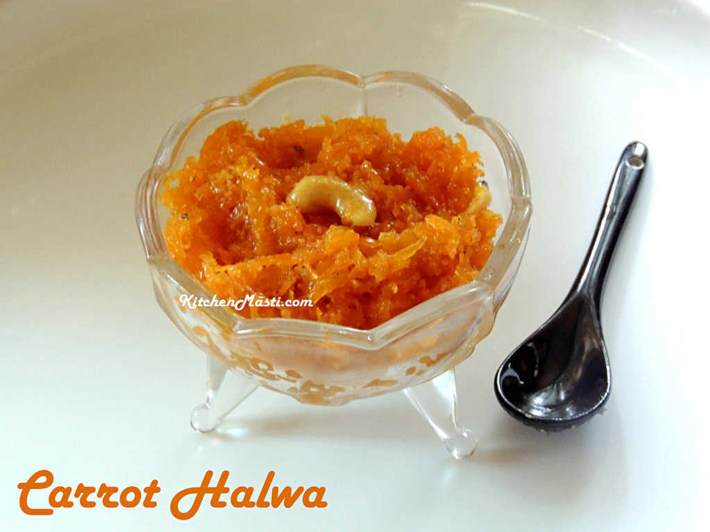

South Indian Recipes
South Indian RecipesBreakfast
Rice items
Sambars and Curry
Sweets
Snacks
 Carrot Halwa, a beloved South Indian sweet, holds a special place in the hearts of dessert enthusiasts. Also known as "Gajar Ka Halwa" in Hindi, this delectable treat has a rich history rooted in Indian culinary traditions. The origins of Carrot Halwa can be traced back to North India, where it gained popularity as a winter delicacy. The sweet dish made its way to the southern part of the country, adapting to the local palate and culinary practices. Over time, South Indian chefs added their unique touch to the recipe, incorporating regional flavors and preferences. Today, Carrot Halwa is a cherished dessert in South India, served during festivals, weddings, and other celebrations. The preparation of South Indian Carrot Halwa involves grating fresh carrots and cooking them in ghee (clarified butter) until they release their natural sweetness. Milk, sugar, and a hint of cardamom are then added, creating a luscious, aromatic blend. The dish is slow-cooked to allow the flavors to meld, resulting in a creamy, caramelized texture that is both comforting and indulgent. The taste of South Indian Carrot Halwa is a harmonious balance of sweetness and richness. The natural sugars from the carrots combine with the creamy texture of milk and the decadence of ghee to create a dessert that is both satisfying and flavorful. The addition of cardamom imparts a warm, fragrant note, elevating the dish to a sensory delight. Carrot Halwa is not only a celebration of flavors but also a testament to the culinary diversity within India. Its journey from North to South reflects the adaptability of traditional recipes, showcasing the ability of regional cuisines to embrace and enhance the essence of a dish. Whether enjoyed as a festive treat or a comforting indulgence, South Indian Carrot Halwa continues to captivate taste buds and preserve the rich tapestry of Indian culinary heritage.
Carrot Halwa, a beloved South Indian sweet, holds a special place in the hearts of dessert enthusiasts. Also known as "Gajar Ka Halwa" in Hindi, this delectable treat has a rich history rooted in Indian culinary traditions. The origins of Carrot Halwa can be traced back to North India, where it gained popularity as a winter delicacy. The sweet dish made its way to the southern part of the country, adapting to the local palate and culinary practices. Over time, South Indian chefs added their unique touch to the recipe, incorporating regional flavors and preferences. Today, Carrot Halwa is a cherished dessert in South India, served during festivals, weddings, and other celebrations. The preparation of South Indian Carrot Halwa involves grating fresh carrots and cooking them in ghee (clarified butter) until they release their natural sweetness. Milk, sugar, and a hint of cardamom are then added, creating a luscious, aromatic blend. The dish is slow-cooked to allow the flavors to meld, resulting in a creamy, caramelized texture that is both comforting and indulgent. The taste of South Indian Carrot Halwa is a harmonious balance of sweetness and richness. The natural sugars from the carrots combine with the creamy texture of milk and the decadence of ghee to create a dessert that is both satisfying and flavorful. The addition of cardamom imparts a warm, fragrant note, elevating the dish to a sensory delight. Carrot Halwa is not only a celebration of flavors but also a testament to the culinary diversity within India. Its journey from North to South reflects the adaptability of traditional recipes, showcasing the ability of regional cuisines to embrace and enhance the essence of a dish. Whether enjoyed as a festive treat or a comforting indulgence, South Indian Carrot Halwa continues to captivate taste buds and preserve the rich tapestry of Indian culinary heritage.
